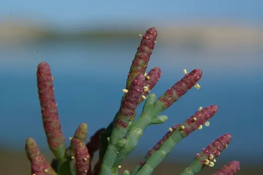

Pickleweed
Pickleweed is a wild green you can forage from June to September in British Columbia, Atlantic Canada and Quebec. Jointed, succulent stems on salt marshes; turns red in autumn.

When is pickleweed in season in Canada?
Pickleweed is usually in season June to September. Timing shifts with weather, latitude and altitude.
Where does pickleweed grow in Canada?
Pickleweed grows in British Columbia, New Brunswick, Newfoundland and Labrador, Nova Scotia, Prince Edward Island, Quebec. Regions: British Columbia, Atlantic Canada, Quebec.
How do you recognise pickleweed?
Jointed, succulent stems on salt marshes; turns red in autumn.
How do you harvest pickleweed?
Pinch off young tips and top leaves before the plant flowers, when they are tender and mild. Leave the roots and lower leaves so it regrows. Pick away from roads, sprayed verges and dog-walking paths.
How do you eat pickleweed?
Raw, blanched or pickled.
How do you store pickleweed?
Pickle.
What is pickleweed good for?
Iron & calcium.